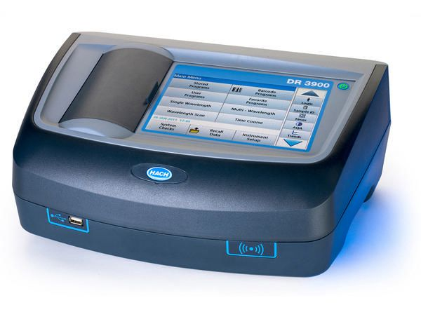

Potenciómetro
Un potenciómetro es el dispositivo que se utiliza para medir la diferencia de potencial existente entre un electrodo de trabajo y uno de referencia, cuando ambos están sumergidos en una solución de la cual se desea determinar su acidez o basicidad, expresando esta como pH.
Refractómetro
El Refractómetro es un instrumento óptico preciso, se basa en su funcionamiento en el estudio de la refracción de la luz. El refractómetro es utilizado para medir el índice de refracción de líquidos y sólidos translucidos permitiendo:
Identificar una sustancia.
Verificar su grado de pureza.
Analizar el porcentaje de soluto disuelto en una determinada solución.
Ofrecer otros análisis cualitativos
Proceso del Espectrofotómetro
El funcionamiento de un espectrofotómetro consiste básicamente en iluminar la muestra con luz blanca y calcular la cantidad de luz que refleja dicha muestra en una serie de intervalos de longitudes de onda.
Distribución
La fuente de luz ilumina la muestra química y biológica para que se realice su función debe cumplir con las siguientes condiciones: estabilidad, direccionalidad, distribución de energía
Proceso del Potenciómetro
El funcionamiento de un potenciómetro se basa en el mecanismo de una celda electroquímica, donde se involucran iones H+ en la reacción química de la celda para determinar la concentración de estos iones en la solución y, de esta manera, obtener el pH de la misma.
Proceso del Refractómetro
Sirve para medir la densidad de los líquidos, gases y sólidos desde el principio de la refracción de la luz originada en la capa límite entre el prisma y la muestra. Su objetivo es analizar distintas sustancias presentes en una materia e identificar cada componente para evaluar su grado de pureza.
PH
¿Qué es?
El pH es una medida de acidez o alcalinidad que indica la cantidad de iones de hidrógeno presentes en una solución o sustancia. Las siglas pH significan potencial hidrógeno o potencial de hidrogeniones
¿El pH?
Es una medida de acidez o alcalinidad que indica la cantidad de iones de hidrógeno presentes en una solución o sustancia. Las siglas pH significan potencial hidrógeno o potencial de hidrogeniones
Símbolo PH:
Potencial y es usado para representar las configuraciones de un ácido o una basa. Las siglas pH significan potencial hidrógeno o potencial de hidrogeniones
Escala PH:
La escala de pH va de 0 a 14 en disolución acuosa, siendo 7 el valor que indica la neutralidad. Las sustancias con un pH mayor a 7 son sustancias básicas y un valor menor de 7 indica acidez.
¿con que equipo se mide?
En los laboratorios se emplean numerosos dispositivos de alta tecnología para medir el pH. Una manera muy fácil en la que puedes medir el pH es usando una tira de papel tornasol. Cuando tocas algo con una tira de papel tornasol, el papel cambia de color dependiendo de si la substancia es ácida o básica. Si el papel se vuelve rojo es porque la substancia es ácida, y si se vuelve azul quiere decir que la substancia es básica.
Reacciones exotérmicas y endotérmica
Una reacción endotérmica requiere energía mientras que una reacción exotérmica libera energía. esta clasificación de las reacciones químicas toma en cuenta la participación de la energía bien como reactante o como producto.
Reacción exotérmica
Una reacción exotérmica
Es una reacción química que desprende energía. La reacción exotérmica se da especialmente en aquellas reacciones de oxidación, que son las reacciones químicas en las cuales existe una transferencia electrónica entre los reactivos, dando paso a una modificación de los estados de oxidación de los mencionados con relación a los productos.
Existen distintas clases de reacciones exotérmicas en los diversos campos de la química, ya sea en el laboratorio o en la industria; algunas se llevan a cabo de manera espontánea y otras necesitan condiciones específicas o algún tipo de sustancia como un catalizador para producirse.
Tipos de reacciones exotérmicas
Reacciones de combustión
Las reacciones de combustión son aquellas de tipo redox que ocurren cuando una o más sustancias reaccionan con oxígeno, generalmente para dar como resultado el desprendimiento de energía lumínica y térmica —es decir, luz y calor— al producirse una flama.
Reacciones de neutralización
Las reacciones de neutralización se caracterizan por la interacción entre una especie ácida y una sustancia de carácter alcalino (base) para formar una sal y agua, las cuales manifiestan una naturaleza exotérmica.
Reacciones de oxidación
Existen muchas reacciones de este tipo que muestran un comportamiento exotérmico, debido a que la oxidación del oxígeno origina el desprendimiento de una gran cantidad de energía, como sucede en la oxidación de hidrocarburos.
Reacción endotérmica
Son aquellas que absorben energía en forma de calor. Una vez que la energía total se conserva del primer para el segundo miembro de cualquier reacción química, si una reacción es endotérmica, la entalpía de los productos Hp es mayor que la entalpía de los reactivos Hr , pues una determinada cantidad de energía fue absorbida por los reactivos en forma de calor, durante la reacción, quedando contenida en los productos.
Un ejemplo de reacción endotérmica es la producción del ozono (O3). Esta reacción ocurre en las capas altas de la atmósfera, gracias a la radiación ultravioleta proporcionada por la energía del Sol. También se produce esta reacción en las tormentas, en las proximidades de las descargas eléctricas.Reacciones que produce el espectrofotómetro es endotérmica .
El espectrofotómetro produce la reacción endotérmica ya que este instrumento tiene la capacidad de proyectar un haz de luz monocromática a través de una muestra y medir la cantidad de luz que es absorbida por dicha muestra. También Hay varios tipos de espectrofotómetros, que son de absorción atómica, de absorción molecular.
Reacciones que produce el potenciómetro es exotérmica.
El potenciómetro se basa en el mecanismo de una celda electroquímica, donde se involucran iones H+ en la reacción química de la celda para determinar la concentración de estos iones en la solución y, de esta manera, obtener el pH de la misma y ala vez su absorción de cada una.
Reacciones que produce el refractómetro es exotérmica.
Se basa en utilizar la refracción de la luz, la cual es una propiedad física de cualquier sustancia y se relaciona con algunas propiedades físicas como la densidad. A partir de ello desprende y se construyen diferentes escalas.
Como se usa el espectrofotómetro.
El espectrofotómetro se usa en el laboratorio con el fin de determinar la concentración de una sustancia en una solución, permitiendo así la realización de análisis cuantitativos.
El espectrofotómetro, es un instrumento de laboratorio construido mediante procesos avanzados de fabricación, es uno de los principales instrumentos diagnósticos y de investigación desarrollados por el ser humano. Utiliza las propiedades de la luz y su interacción con otras sustancias, para determinar la naturaleza de las mismas. En general, la luz de una lámpara de características especiales es guiada a través de un dispositivo que selecciona y separa luz de una determinada longitud de onda y la hace pasar por una muestra. La intensidad de la luz que sale de la muestra es captada y comparada con la intensidad de la luz que incidió en la muestra y a partir de esto se calcula la transmitancia de la muestra, que depende de factores como la concentración de la sustancia.
Como se usa el potenciómetro
Resistencia variable
Variador de voltaje para ajustes de resolución
Variador de velocidad
Realimentación en el circuito de control de un servomotor
Entrada manual para ajustes de preferencias de usuario
Todo tipo de aplicaciones en las cuales se necesita que el usuario pueda modificar las condiciones iniciales y/o ajustar parámetros puntuales.
Como se usa el refractómetro
Un refractómetro es un instrumento de laboratorio que sirve para medir la densidad de los líquidos, gases y sólidos desde el principio de la refracción de la luz originada en la capa límite entre el prisma y la muestra. Su objetivo es analizar distintas sustancias presentes en una materia e identificar cada componente para evaluar su grado de pureza. Primero debemos asegurarnos que este calibrado. Colocamos unas gotas de agua destilada en el vidrio y cerramos la tapa teniendo en cuenta que no queden lugares vacíos ni burbujas de aire en la muestra, esperamos 30 segundos sostenemos el refractómetro apuntándolo hacia una fuente de luz y miramos por la lente / mirilla. Vamos a notar una parte azul y una blanca. La línea horizontal que forma la separación de ambos campos debería marcar 0° brix sino debemos ajustar la calibración mediante un tornillo que sirve para este fin. Una vez que calibramos, limpiamos la ventana y volvemos a realizar otra medición para asegurarnos que este calibrado.
Propiedades de la materia
Sólida
En los sólidos, las partículas están unidas por fuerzas de atracción muy grandes, por lo que se mantienen fijas en su lugar.
Propiedades:
Tienen forma y volumen constantes.
Se caracterizan por la rigidez y regularidad de sus estructuras.
No se pueden comprimir, pues no es posible reducir su volumen presionándolos.
Se dilatan: aumentan su volumen cuando se calientan, y se contraen: disminuyen su volumen cuando se enfrían.
Líquida
Las partículas están unidas, pero las fuerzas de atracción son más débiles que en los sólidos, de modo que las partículas se mueven y chocan entre sí.
-No tienen forma fija pero sí volumen.
- La variabilidad de forma y el presentar unas propiedades muy específicas son características de los líquidos.
- Los líquidos adoptan la forma del recipiente que los contiene.
- Fluyen o se escurren con mucha facilidad si no están contenidos en un recipiente; por eso, al igual que a los gases, se los denomina fluidos.
- Se dilatan y contraen como los sólidos.
Gaseosa
En los gases, las fuerzas de atracción son casi inexistentes, por lo que las partículas están muy separadas unas de otras y se mueven rápidamente y en cualquier dirección, trasladándose incluso a largas distancias.
Propiedades:
-No tienen forma ni volumen fijos.
- En ellos es muy característica la gran variación de volumen que experimentan al cambiar las condiciones de temperatura y presión.
- El gas adopta el tamaño y la forma del lugar que ocupa.
- Ocupa todo el espacio dentro del recipiente que lo contiene.
Tipos de espectroscopia
Las radiografías de la suficiente energía se utilizan para excitar los electrones de la granada interna en los átomos de una muestra. Los electrones se trasladan a los orbitarios exteriores entonces hacia abajo a las granadas internas desocupadas y la energía en este proceso de la desexcitación se emite como radiación. En cristalografía de la radiografía, los materiales cristalinos son analizados estudiando la manera que dispersan radiografías las tuvieron como objetivo. Conocer la longitud de onda de las radiografías del incidente permite el cálculo y las intensidades de las radiografías dispersas dan eventual la información sobre las posiciones atómicas y su ordenación dentro de la estructura cristalina.
LLAMA Espectroscopia de emisión atómica
El analito está generalmente en la forma de la solución (o convertido en una) que entonces se convierte a una forma gaseosa libre en un proceso gradual (pulverización). Este método es de uso frecuente para los analitos del elemento metálico presentes en los alcances de concentración muy inferiores.
Espectroscopia de emisión atómica (Ae)
Este método utiliza los átomos emocionados del calor de una llama para emitir la luz. El análisis se puede hacer con un polychromator de alta resolución para producir una intensidad de la emisión comparado con espectro de la longitud de onda para descubrir elementos múltiples simultáneamente.
Espectroscopia de la chispa o del arco (emisión)
Esto se utiliza para analizar los elementos metálicos sólidos o las muestras nas-metálico hechas conductores por ser esmerilado con el polvo del grafito. El análisis requiere el paso de una chispa eléctrica con él para producir un calor que excite los átomos. Los átomos emocionados emiten la luz de las longitudes de onda características que se pueden descubrir usando un monocromador. El análisis de estos elementos metálicos en muestras sólidas es tan cualitativo que las condiciones de la chispa no son bien vigiladas en general sin embargo el uso recientemente introducido de las fuentes de la chispa que implican datos cuantitativos controlados de los rendimientos de los licenciamientos.
Clasificación Visible/Ultravioleta (Uv)
La espectroscopia ULTRAVIOLETA se puede utilizar para cuantificar la concentración de proteína y de DNA en una solución. Muchos aminoácidos (triptófano incluyendo) absorben la luz en el alcance de 280 nanómetro mientras que la DNA absorbe la luz en el alcance de 260 nanómetro. Usando este conocimiento indica el índice de 260/280 absorción del nanómetro como buen indicador de la pureza relativa de una solución en términos de estas entidades. La espectroscopia ULTRAVIOLETA se puede también utilizar para analizar fluorescencia de una muestra en una forma de la espectroscopia de amortiguación.
Infrarrojo (Ir)
La espectroscopia del IR se utiliza para mostrar qué tipos de ligazones están presentes en una muestra midiendo diversos tipos de vibraciones en enlace interatómicas en diversas frecuencias. Confía en el hecho de que las moléculas absorben frecuencias específicas que es relacionado en su estructura química. Esto es determinado por factores tales como las masas de los átomos.
Espectroscopia de la absorción atómica (AA)
Comparado a la espectroscopia de los AE, una llama de una temperatura más baja se utiliza para no excitar los átomos de la muestra. En lugar, los átomos del analito son real emocionados usando las lámparas que brillan a través de la llama en las longitudes de onda ajustadas según el tipo de analito bajo estudio. La cantidad de analito presente en la muestra del estudio es resuelta sobre la base de cuánta luz se absorbe después de pasar a través de la llama.
Infografía de espectrofotómetro
INFOGRAFIA DEL REFACTOMETRO
Potenciometro
Equipo: EQUIPO
Nombre de los Integrantes:
Becerril JOSE OMAR
REYES EVANGELISTA GUADALUPE
MIRELES ROLDAN SUSET
BIBIANO DE JESÚS AMÉRICA PAOLA
Instrucciones: realiza el siguiente cuadro con los elementos a considerar del proyecto transversal, que van a desarrollar. Te puede apoyar del ejemplo anexo en la página 140 de su libro.
| Tema | PROYECTO TRANSVERSAL INVESTIGACIÓN DOCUMENTAL DE POTENCIOMETRO, REFRACTOMETRO, ESPECTROFOTOMETRO. |
| Delimitación | CONOCIMIENTO ESPECÍFICO DE INSTRUMENTAL DE LABORATORIO |
| Audiencia | ALUMNOS INTERESADOS EN EL TEMA LOS CUALES DARÁN A CONOCER EN UN DETERMINADO TEXTO LAS ESPECÍFICACIONES DE ESTE INSTRUMENTAL Y A LOS DOCENTES QUE IMPARTEN CLASE EN EL GRUPO 211 TURNO VESPERTINO. |
| Propósito | EL PROPÓSITO DE ESTE PROYECTO, ES QUE LOS ALUMNOS DESARROLLEMOS LA IMPORTANCIA HACIA EL INSTRUMENTAL DE LABORATORIO Y A PARTIR DE ESE CONOCIMIENTO PLASMADO EN UN TEXTO COMPLEMENTARLO CON LAS HERRAMIENTAS TECNOLÓGICAS. |
| Tesis | LO QUE REALMENTE ES IMPORTANTE DESTACAR EN ESTE PROYECTO ES QUE LAS HERRAMIENTAS TECNOLÓGICAS TOMAN UN PAPEL IMPORTANTE, LAS INVESTIGACIONES QUE SE VAN A REALIZAR EN ESTE PROYECTO SON DETERMINANTES PARA COMPLEMENTAR EL CONOCIMIENTO. LOS INSTRUMENTOS A INVESTIGAR EN ESTE PROYECTO SON MUY IMPORTANTES PARA EL DESEMPEÑO DE LOS ALUMNOS EN LA QUÍMICA, TENIENDO EN CUENTA LA CAPACIDAD DE ENTEDER ¿QUÉ SON?, ¿CÓMO FUNCIONAN?, ¿PARA QUE SON UTILIZADAS?, CON IMÁGENES, INFOGRAFIAS, ESTAS PARA COMPRENDER CON HERRAMIENTAS VISUALES MEJOR EL INSTRUMENTAL, ADEMAS QUE SE ANEXA ALGO MUY IMPORTANTE COMO LO ES EL USO DE PAGINAS WEB O CONVERTIR ESTO ES UNA PAGINA WEB. VERDADERAMENTE ES IMPORTANTE EL CONOCER LA IMPORTANCIA DE ESTE INSTRUMENTAL. |
| Objetivos de contenido | a. CAPACITAR A LOS ALUMNOS A UTILIZAR EL INSTRUMENTAL DE LABORATORIO. b. PROPORCIONAR INSTRUMENTOS PARA EL APRENDIZAJE, EL ANALISIS, LA SUPERACION DE LOS OBSTACULOS Y DIFICULTADES QUE SE PUEDAN PRESENTAR AL UTILIZAR ESTE INSTRUMENTAL. c. MENCIONAR BENEFICIOS DEL INSTRUMENTAL. |
| Objetivos procedimentales | 1.EL ALUMNO RECONOZCA SUS HABILIDADES PARA EL MANEJO DE ESTE INSTRUMENTAL. 2. ALIMENTAR EL CONOCIMIENTO CON NUEVAS ESTRATEGIAS PARA EL DESEMPEÑO DEL ALUMNO. 3. ANALIZAR Y CONOCER EL ENTORNO DONDE EL ALUMNO SE VA A DESEMPEÑAR. 4. REALIZAR INFOGRAFIAS PARA QUE EL TEXTO SEA MAS COMPRENSIVO PARA EL LECTOR. 5. UTILIZAR CONOCIMIENTO BASE SOBRE LAS HERRAMIENTAS TECNOLOGICAS PARA SER MAS ATRACTIVO EL TEXTO. |
| Tipo de texto (expositivo, argumentativo, analítico) | TIPO DE TEXTO,( ANALITICO) |
Empresas que ocupan el espectrofotómetro, potenciómetro y el refractómetro
Empresa Hitachi.
Hitachi presentó Hitachi Vantara, una empresa que aprovecha la amplia cartera de innovación, desarrollo y experiencia de todas las compañías del Grupo Hitachi, para ofrecer soluciones basadas en datos para organizaciones comerciales e industriales.
Espectrofotómetro
Aplicaciones: para laboratorio farmacéutico
Longitud de onda: Máx.: 900 nm Mín.: 190 nm
Cubre una amplia variedad de necesidades de análisis, desde muestras líquidas hasta muestras sólidas. Se pueden seleccionar dos tipos de acuerdo con el objeto y la aplicación de la medición. Para su uso en una amplia gama de campos que se centran en la calidad del agua, el medio ambiente, la biotecnología, los productos farmacéuticos, los materiales, etc.
Es posible realizar mediciones en un amplio rango de absorbancia con poca luz parásita y poco ruido Cuanto mayor sea la cantidad de luz transmitida, menor será el ruido del espectro de absorción obtenido, de manera que se pueda medir un rango de absorción más amplio. Las mediciones de muestras de alta concentración pueden realizarse en un rango de concentración más amplio.
Potenciómetro
Potenciómetro Portátil DPH-2 / Medidor de pH SKU: 4320Categorías: ATAGO OFERTAS, Medidores de pH, Promociones
Descripción
Potenciómetro Portátil DPH-2 / Medidor de pH es extremadamente fácil de usar. Tiene un diseño compacto, portátil y es resistente al agua (IP67), así que se puede lavar bajo el agua del grifo y puede ser sumergido en agua sin tener efectos negativos. Además tiene Compensación Automática de Temperatura que funciona entre 0 a 50°C. Por estas características, el DPH-2 es perfecto para diferentes aplicaciones incluyendo : control de producción de comidas y bebidas, elaboración de cerveza, fermentación, tierra, hidrocultivo, aceite de corte, líquidos de lavado alcalinos, y otras soluciones solubles. Esta unidad posee excelentes características a un excelente precio. 3 Puntos de Calibración (4.0, 7.0 y 10.0)
Especificaciones
ModeloDPH-2Número de catálogo4320Rango de Medición0.0 a 14.0pHResolución0.1pHExactitud de la Medición± 0.1pH (2.0 a 12.0pH)Rango de Compensación de Temperatura0.0 a 50.0°CFuente de PoderBatería de reloj (LR44) 1.4V×4
Refractómetro
Características
Tipo:digital
Aplicaciones:de laboratorio, para la industria farmacéutica
Configuración:de mesa
Otras características:con pantalla táctil
Descripción
Refractómetro de amplio rango J257 con rango de medición extendido El refractómetro de amplio rango Rudolph Research J257 fue desarrollado en colaboración con usuarios de refractómetro de laboratorio de las industrias de polímeros, petróleo, petroquímica, farmacéutica y de aceites esenciales. El J257 es un refractómetro digital totalmente automático, con refrigeración y calefacción electrónica y un rango de medición de índice de refracción (RI) ampliado. El J257 es parte de la línea de productos Rudolph Research Rudolph Research Refractomete
Empresa mclap
MCLAB ofrece una amplia gama de servicios y tiene una amplia experiencia en secuenciación. Ofrecen muy buenos tiempos de entrega de muestras, lo que siempre es bueno si tienes prisa. MCLAB también ofrece un servicio gratuito de recogida en el área de la Bahía de San Francisco.
Espectrofotómetro
Tipo:visible, UV-visible
Aplicaciones:para la investigación, para control de calidad, para la industria farmacéutica, para la cuantificación de ácidos nucleicos, para análisis de agua
Otras características:de mesa, con puerto USB, con pantalla táctil, halógeno, con lámpara de arco de deuterio, alta resolución, con multiplicador de fotones
Longitud de onda: Máx.: 1.100 nm Mín.: 190 nm
Software de a bordo
ANALISTA de software para PC Los métodos de ADN/ARN están preprogramados Alfombrilla para Windows® (Windows® 10) incl. cubierta con teclado Software de ANALISTA y AUDITORÍA DE RASTRO (21 CFR parte 11) instalado Incluyendo todos los cables necesarios Un máximo de 2 juegos por cada socio certificado
La serie EMC-6 son avanzados espectrofotómetros de doble haz.
Los dos detectores miden la muestra y la referencia respectivamente y de forma simultánea para optimizar la precisión de la medición. Proporcionan un excelente rendimiento para las mediciones en el rango de 190 a 1100 nm. La memoria es de 32K. Son adecuados para aplicaciones farmacéuticas, bioquímicas y de laboratorio clínico, así como para aplicaciones rutinarias como el análisis cuantitativo, la cinética, el escaneo de longitudes de onda, la multi-longitud de onda y el análisis de ADN/proteínas. El software de PC Analyst basado en Windows® hace que los instrumentos sean versátiles. Los instrumentos proporcionan un excelente rendimiento para las mediciones.
Potenciómetro
Potenciómetro Portátil DPH-2 / Medidor de pH es extremadamente fácil de usar. Tiene un diseño compacto, portátil y es resistente al agua (IP67), así que se puede lavar bajo el agua del grifo y puede ser sumergido en agua sin tener efectos negativos. Además tiene Compensación Automática de Temperatura que funciona entre 0 a 50°C. Por estas características, el DPH-2 es perfecto para diferentes aplicaciones incluyendo: control de producción de comidas y bebidas, elaboración de cerveza, fermentación, tierra, hidrocultivo, aceite de corte, líquidos de lavado alcalinos, y otras soluciones solubles. Esta unidad posee excelentes características a un excelente precio. 3 Puntos de Calibración (4.0, 7.0 y 10.0).
Empresa atago
ATAGO, podrían fabricar este tipo de instrumento?" "Nunca pensamos que las cosas fueran tan sencillas utilizando los productos ATAGO." ATAGO está investigando nuevas necesidades específicas y variadas en el mercado; desarrollando nuevos e innovadores productos para hacer frente a estas demandas. En búsqueda de soluciones que satisfagan las necesidades de nuestros clientes. ATAGO se esfuerza continuamente por fabricar y sacar al mercado nuevos instrumentos, apoyado por un equipo especializado en investigación y desarrollo.
Tipo:
Aplicaciones:para la industria farmacéutica Configuración:portátil Descripción No. de catálogo 4426 Escala Manitol (g/100g) Temperatura Rango de medición Manitol : 0,0 a 15,0% Temperatura: 10.0 a 40 C Resolución Manitol : 0,1% Temperatura : 0.1 C Precisión de medición Manitol : 0,3% Temperatura : 1 C Rango de compensación de temperatura 10 a 40 C (Compensación automática de temperatura) Temperatura ambiente 10 a 40 C Volumen de muestra 0.3 mL Tiempo de medición 3 segundos Fuente de alimentación 2 x AAA Pilas Duración de la batería Aprox. 11.000 veces la medición (cuando se utilizan pilas alcalinas) Clase de protección internacional IP65 Estanco al polvo y protegido contra chorros de agua. Dimensiones y peso 55(ancho) x 31(profundidad) x 109(altura) mm, 100g (sólo unidad principal)Potenciómetro
Antón Paar desarrolla y produce instrumentos analíticos que le permiten comprender sus materiales. Gracias a la fiabilidad de los datos, los científicos, investigadores e ingenieros pueden investigar y desarrollar productos, gestionar y controlar la calidad de fabricación, y optimizar su producción.
Espectrofotómetro
Mirar, medir y actuar en cuestión de segundos. El analizador portátil Raman Cora 100 tiene Espectrofotómetro misión: identificar sustancias. ¿Y si usted no es un químico formado ni un experto en espectrometría? No hay problema: Con este espectrómetro portátil, su sencillo software y los accesorios tiene a su disposición todo lo necesario para identificar sustancias en situaciones estresantes, zonas calientes o en el almacén. El instrumento se puede manejar con guantes y la pantalla de 3.5’’ ofrece una buena visibilidad con luz solar o lluvia. El Cora 100 muestra el resultado en cuestión de segundos sin análisis complicados y minimizando el tiempo entre la evaluación del riesgo y la acción.

Refractómetro
La serie Abbemat 3X00 mide la concentración de soluciones binarias. Con más de 200 métodos disponibles - desde el ácido acético hasta Zeiss - los refractómetros Abbemat proporcionan el control de calidad que usted necesita.Índice de refracción
Productos farmacéuticos (métodos acc. a F. EU / US / JP)
Alimentos (p. ej., Brix, sacarosa, glucosa, valor de yodo)
Bebidas (por ej, Brix, azúcar invertido, sacarosa, Zeiss)
Productos químicos (por ej., hidróxido de sodio, ácido
Los refractómetros Abbemat 3X00 vienen listos para medir inmediatamente después del desembalaje.
Listo para medir inmediatamente después de desembalar
La interfaz de usuario intuitiva permite el acceso a todas las funciones relevantes para la medición en una pantalla táctil acolor de 5.8"
Puede ser operado incluso con guantes Avisos automáticos si el prisma de medición no está limpio o el volumen de la muestra es demasiado bajo para obtener una medición válidaEmpresa BIOBASE
BIOBASE siempre se adhiere a la misión de «servicio para la salud para el futuro» y promueve la cultura de la empresa enérgicamente. Al proporcionar productos de alta calidad y un buen servicio, BIOBASE desea establecer una cooperación comercial de beneficio mutuo con distribuidores de todo el mundo.

Espectrofotómetro
Características Tipo:de fluorescencia Longitud de onda:Máx. 650 nm, Mín.360 nm
Descripción
El análisis de fluorescencia puede proporcionar información que incluye el espectro de excitación y emisión, la intensidad de la luz de emisión y la medición de la vida de la luz de emisión y la fluorescencia de polarización, etc., así como una amplia gama lineal de la curva de trabajo
Este método se ha utilizado en: Ciencia médica y clínica, ciencia farmacéutica y farmacología, bioquímica, industria alimentaria, contaminación y química orgánica e inorgánica
Características del BK-F93
Monocromador de emisión de rejilla de difracción de 1200 líneas. El LED es una fuente de luz fría con longevidad, menor fondo y fiabilidad, que evita la termocontaminación. Ajuste automático de cero y sustracción automática de fondo.
Refractómetro
Características Tipo:de Abbe Aplicaciones:de laboratorio Configuración:de mesa Otras características:de efecto Peltier
Descripción
Características para BK-R2S: Prisma de cristal duro Interfaz estándar RS232 Mide el Brix de la solución de azúcar. Objetivo visual y pantalla LCD Corrección automática del efecto de la temperatura en el Brix. Medición del índice de refracción nD de sustancias líquidas y sólidas transparentes o translúcidas Modelo BK-R2S Rango de medición 1.3000-1.7000nD, Brix: 0-100 Medición de la resolución 0.0001nD Medición de la precisión 0.0002nD, Brix:0.1 Modo de prueba / Rango de control de temperatura 0-50 c Resolución de la temperatura 0.1 c Precisión de la temperatura 0.5